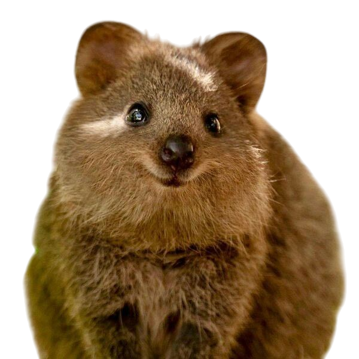

25
Population
NEED ATTENTION !
 LECI
LECI
LECI
LECI

Welcome, WCT Pawl!
Easily record and monitor wildlife activity.
Access data, report findings, and support conservation efforts in the field.
LECI
LECI
